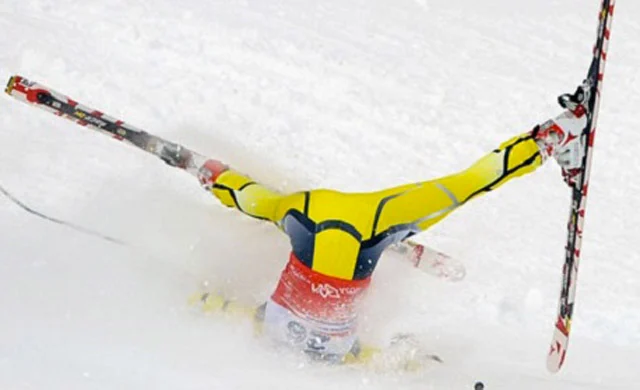

Powder Hour
This year has seen far more early season snowfall and has allowed many of the resorts to open in mid November, over a month earlier than they were last year. Accordingly It might be a good Idea to get some of the early season mountains a look before they get too crowded later in the season. Some resorts that have recently been receiving more snow are Jackson Hole, and Grand Targhee, both of which are located just across the Idaho border in Wyoming.
Check out ski utah to see the what's new in the greatest snow on earth!
Limited Lifts
With the Mountain collective, there is a two day limit to each resort. This means that If you want to get the best use out of your pass, you will need to visit a wide range of resorts. Most of these are located in the Rocky Mountains and in the Sierra Nevada mountain range. Accordingly the mountain collective may not be the best option for the dedicated skier; however, It is perfect for those who can only get away to the slopes on weekends. Residents of Idaho, Utah, Wyoming, and Colorado are within a day’s travel of eight destinations that when totaled up will provide 16 weekends worth of shredding. For the busy college student, the mountain collective is a fantastic option, especially when your girlfriend lives a state away.
"If you don't send it, I'm probably going to end it."
-Jerry
Head for Snowbird instead
Mountain Collective users should be aware that in Alta ski area, it is prohibited to snowboard. The resort maintains that snowboarders disrupt the peace that the skiing clientele seek, and has even won various court cases to allow them to continue their ban. Unfortunately, this resort is one of the only three open to Mountain Collective pass holders in Utah. Be sure to plan accordingly, or to pick up skiing for a couple of days.
Safety First
With the above-average snowfall early this year, many resorts are already open. Unfortunately, many that have opened are only operating at limited availability. Most resorts open in the preseason have lifts that are not yet running, runs that are not yet open, and exposed terrain that can be dangerous for equipment and visitors to the slopes. Always be aware of the kind of terrain, and the dangers that it brings. Exposed rocks can shred skis, boards, and bodies alike, so never drop in unless you know what you are getting into. Always wear a helmet, and always let someone know where you are going.
